Tools and Pipeline Projects
Scene Scatter Tool - Generating Archeological Ruins
Created using Maya and Python scripting, this script allows the artist to generate an archeological ruins scene by selecting 3D models of arches and pillars with varying levels of decay, and setting the number of 3D models and their relative distance.

Code
https://github.com/devikasantosh/ArcheologicalRuinsGeneratorCredits
Pillar assets from chuckcg (https://sketchfab.com/3d-models/ancient-pillars-7e5990c67d9e4cbcbd00dc9f87221462)
Arch assets from Unreal Designer (https://sketchfab.com/3d-models/stone-arch-pillars-ruins-a1a8e633c9aa40c08b4d2a0631ac61d2)
Programming Natural Variety
Inspired by The Science behind
Pixar exhibit on Programming Natural Variety!
I created a tool where an artist can
create a patch of grass by adjusting colour, variation in colour, height and width of grass blades,
area of patch, curvature, and number of blades of grass.
Credits
Inspiration: Science behind Pixar
Character Design and Animation Projects
Class: Introduction to 3D Animation Pipeline
Software: Procreate, Zbrush, Autodesk Maya, Adobe Substance Painter 3D
Concept Art and Worldbuilding
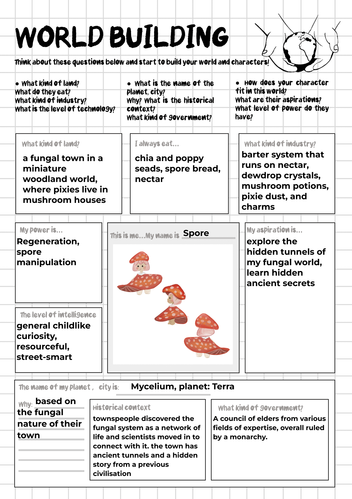 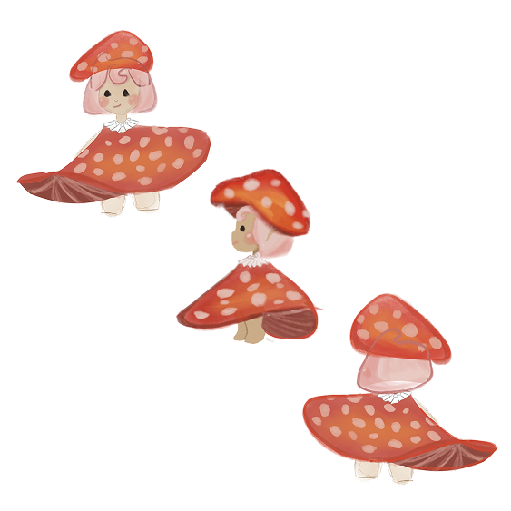
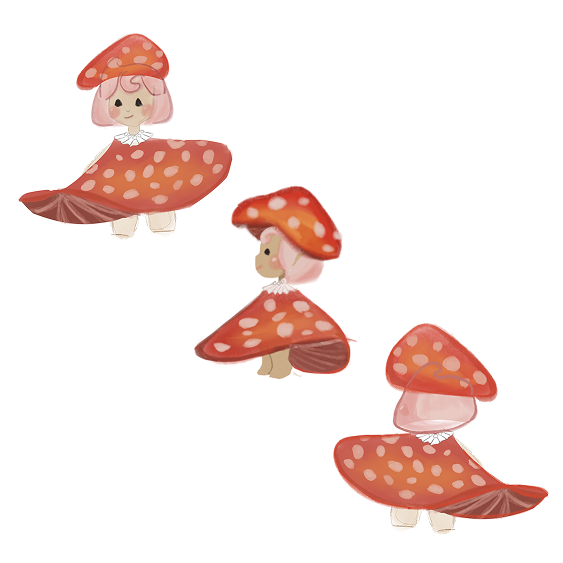
3D Modelling
Modelling on Zbrush, remeshing on Maya
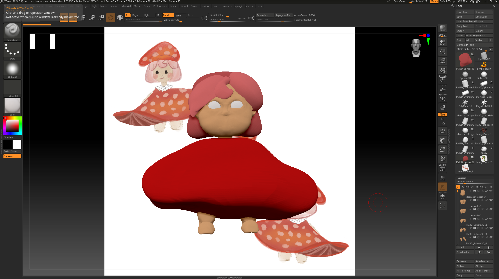 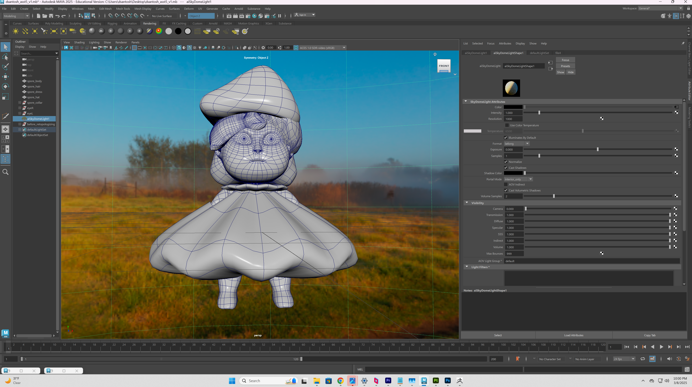Texturing
Done on Substance Painter

Lighting and Rendering
Maya - Arnold
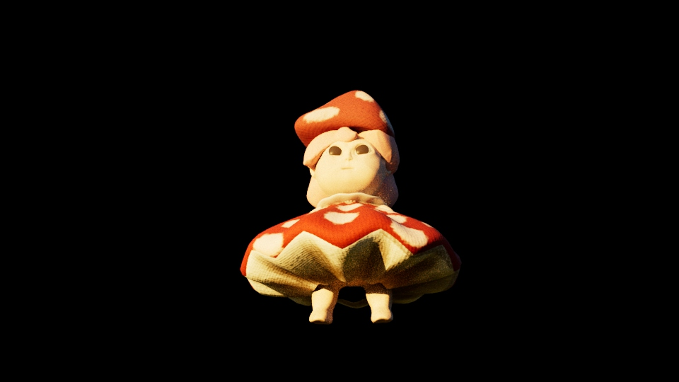 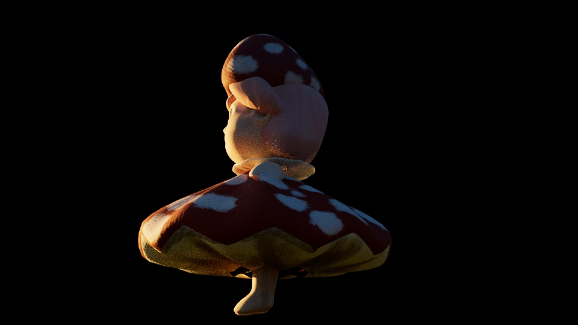 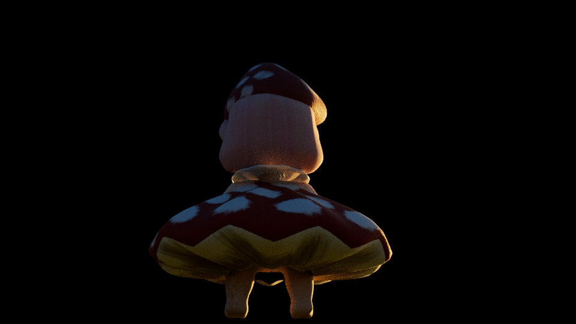 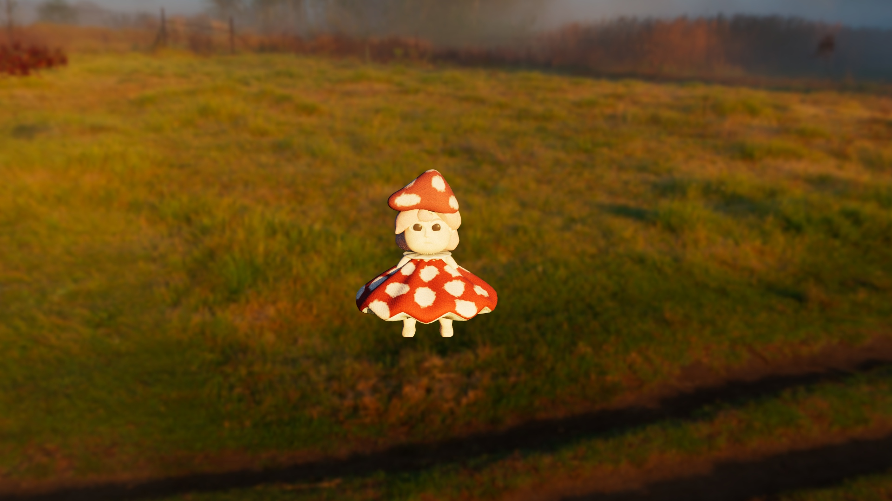 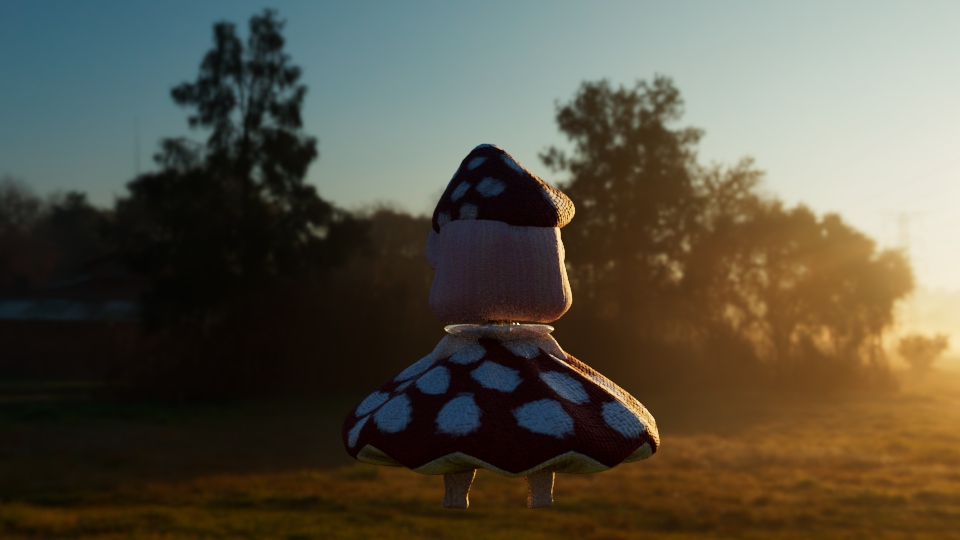 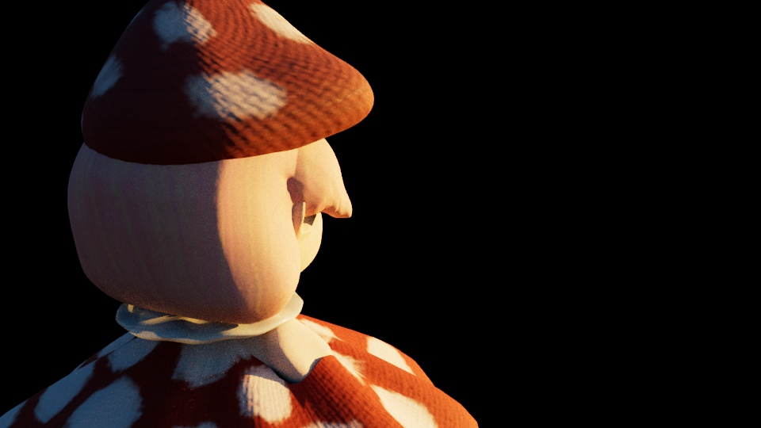Storyboarding
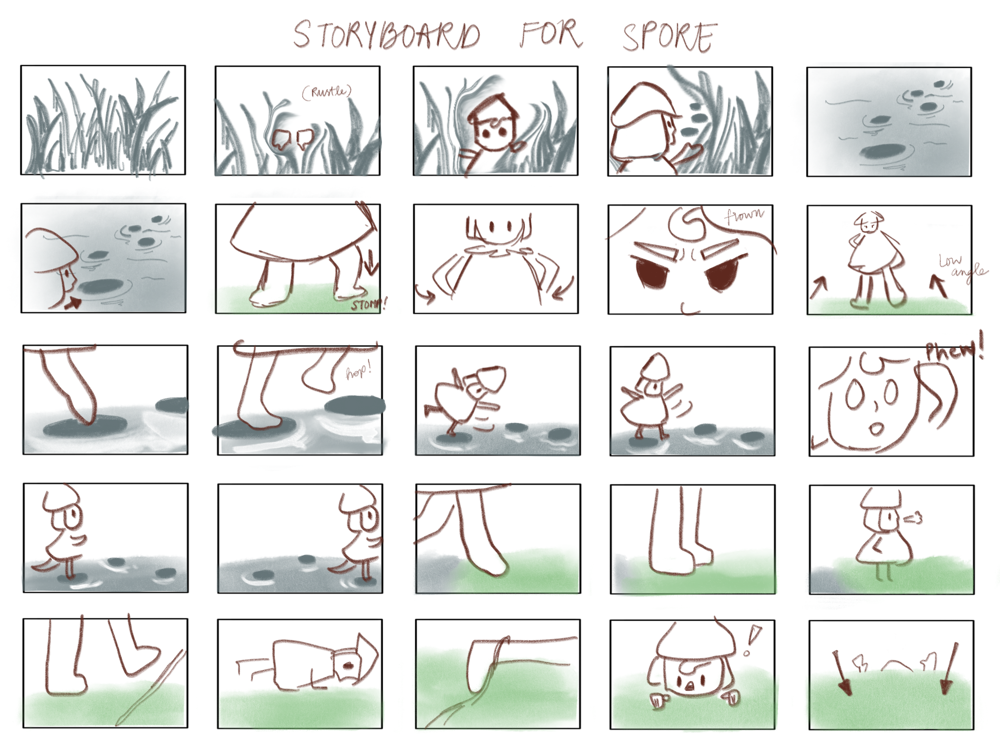Rigging and Controls
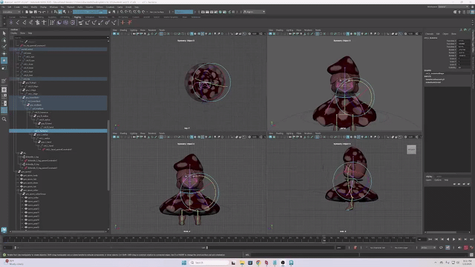 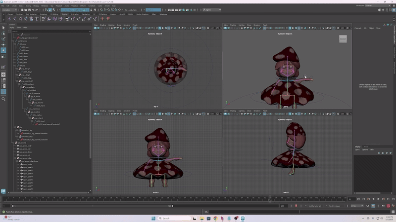 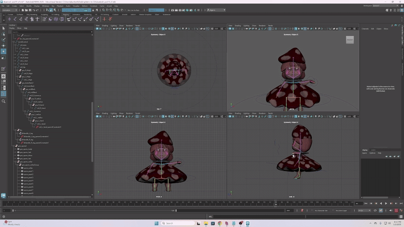
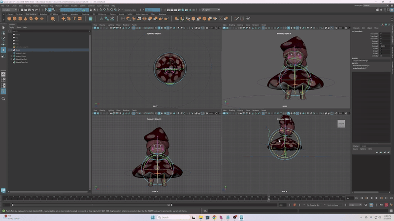
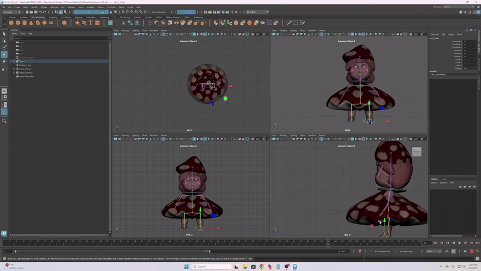
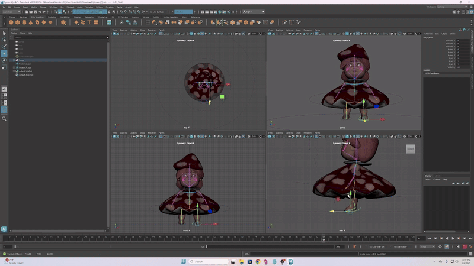
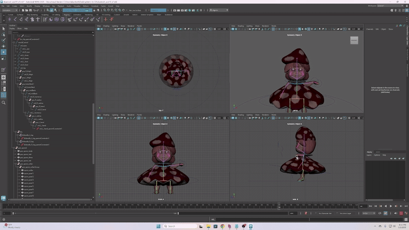
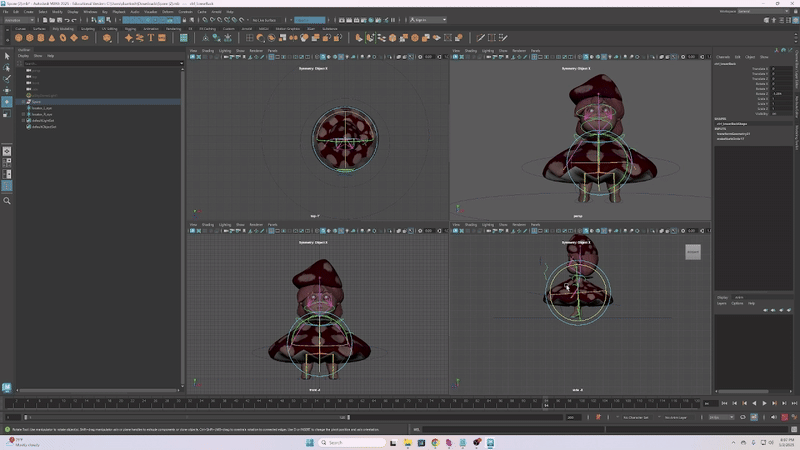
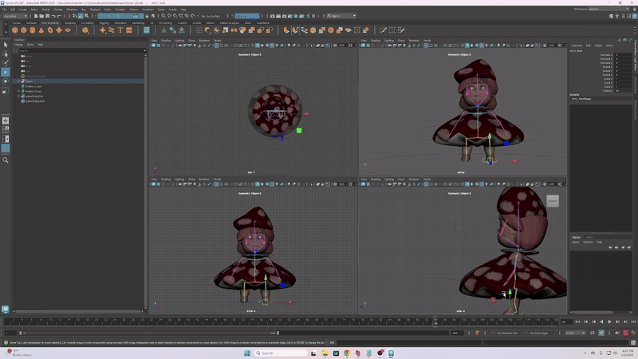
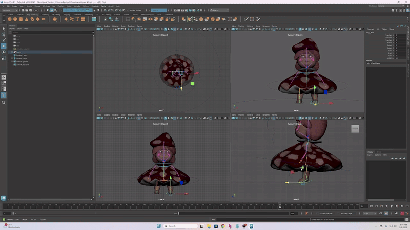
Final Animation
Animation Projects
Software: Procreate
When the Clock Strikes 12
Imagine a world where shadows spring to life at the stroke of midday. As the sun reaches its zenith, and the shadows fall right below, the magic unfolds. Unseen by human eyes, a secret realm reveals itself in the shadows below.
Character Design

Basic Storyboarding
Animation (work-in-progress!)